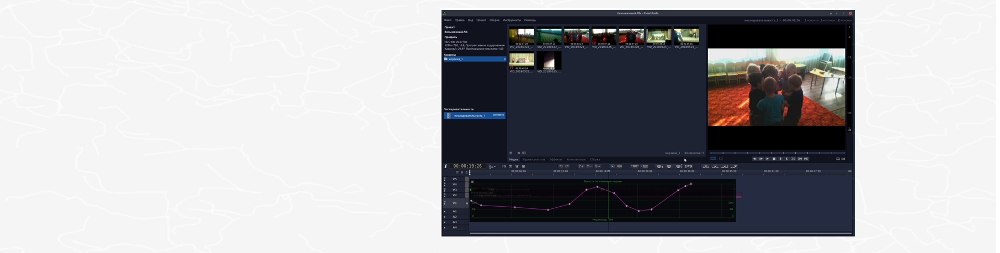
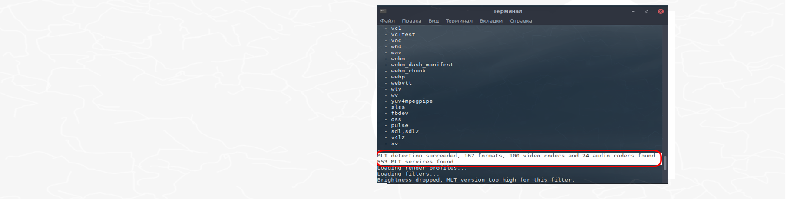
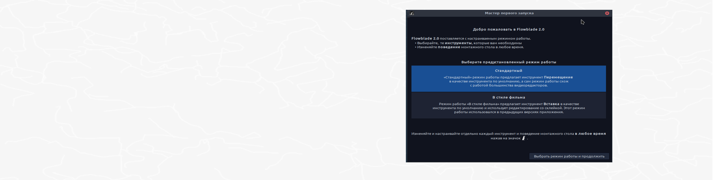
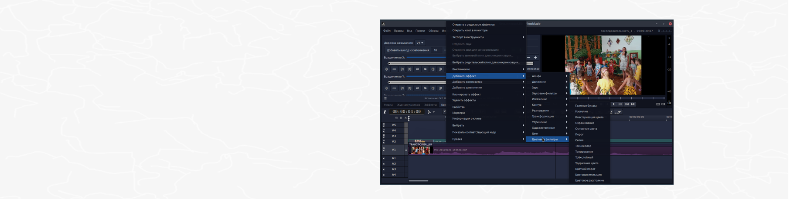
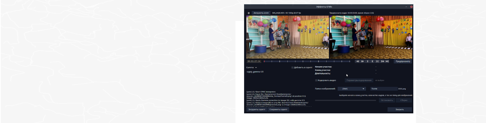
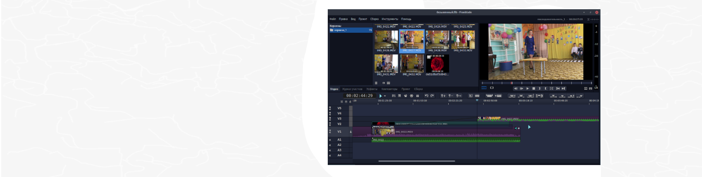
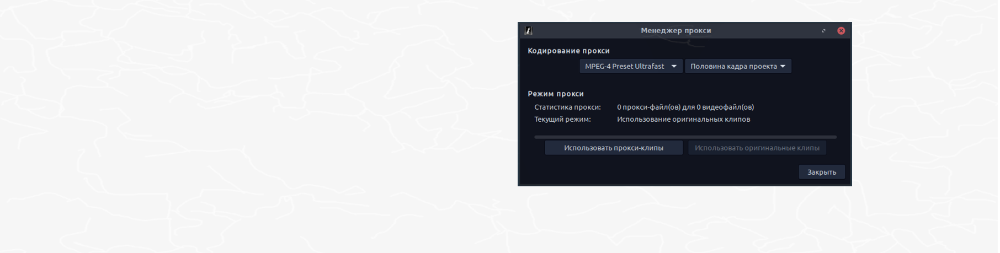
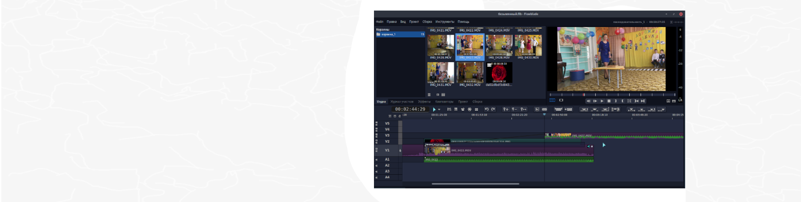

-

Быстрый, точный, стабильныйFlowblade - многодорожечный нелинейный видеоредактор, выпущенный под лицензией GPL3. Поможет, как новичку, так и опытному пользователю воплотить в жизнь свои творческие идеи, по созданию видеороликов.
-

Поддерживает все кодекиFlowblade поддерживает все кодеки, которые в целом могут быть доступны в системе Linux, так как, он работает в качестве интерфейса для библиотеки FFMPEG. При запуске в терминале, мы видим сообщение о том, что для работы, нам доступны: 167 форматов, 100 видеокодеков и 74 звуковых кодеков.
-

Настраиваемый «Режим работы»Можно выбрать предустановленный «Режим работы» (набор инструментов, его порядок, инструмент по умолчанию и определённое поведение монтажного стола), или настроить его самому.
-

Композиторы и эффектыОбъединяйте и смешивайте видео, изображения и звук с помощью мощных инструментов. Тонируйте видеоролики в соответствии с вашим видением и изменяйте звук, для получения того настроения, которое вы хотите передать.
-

Инструмент Эффекты G'MICG'MIC - это мощная технология фильтрации изображений с открытым исходным кодом, которую Flowblade предоставляет в виде отдельного инструмента. Смотрите демонстрационное видео.
- 
СинхронизацияСинхронизируйте ваши видеоклипы со звуковыми клипами или с клипами на других дорожках. Если синхронизация нарушена, можно легко синхронизировать их повторно.- 
Режим проксиЕсли у вас слабый компьютер, слишком медленный внешний накопитель или видеоролики хранятся на сетевом сервере, для комфортного редактирования, вы всегда можете выбрать Режим прокси. ПробуйтеВ этом слайд-шоу представлены только основные возможности, а их количество растёт с каждым выпуском, поэтому перечислять их все не имеет смысла. Но есть смысл установить Flowblade на свой компьютер и попробовать все возможности в деле.
ПробуйтеВ этом слайд-шоу представлены только основные возможности, а их количество растёт с каждым выпуском, поэтому перечислять их все не имеет смысла. Но есть смысл установить Flowblade на свой компьютер и попробовать все возможности в деле.
Видеообзор последнего выпуска
Видеообзор предыдущего выпуска
Цитаты пользователей
"Когда я наткнулся на Flowblade, он сразу мне понравился. Я редактирую в нём фильмы продолжительностью от 2 до 3 часов используя большое количество видеоклипов. Очень удобно, когда клипы автоматически склеиваются друг с другом, особенно во время удаления плохих участков и перемещения видео.", dnsXXXXX
"Мы - группа немецких студентов - в настоящее время снимаем фильм для школьного проекта, мы познакомились с несколькими свободными видеоредакторами и решили остановиться на Flowblade.", "... С этого момента всё стало получаться хорошо — наконец больше никаких сбоев! Множество эффектов, про которые я думал, что просто придётся забыть, теперь снова мне доступны. Спасибо за вашу поддержку - Flowblade rocks!", R.W, Germany
"Я профессиональный оператор монтажа и режиссер, со стажем работы более 15 лет здесь, в Италии... [Flowblade] уже показывает, что в нём заложен большой потенциал, так как видно, что разрабатывают его люди имеющие представление, каким должен быть видеоредактор, для реального его использования.", M.S, Italy
- 